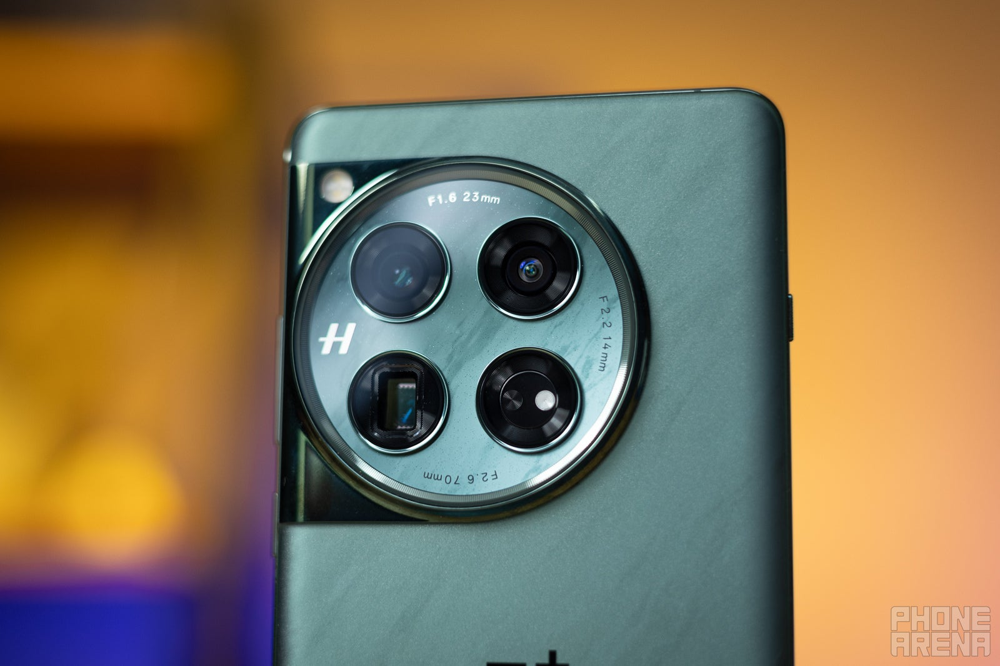

OnePlus 12 Review: Easily the best OnePlus Phone Ever

OnePlus 12 Intro
It's not only Samsung that's stoking the fires of Tech January with the Galaxy S24 Ultra and the rest of the series, OnePlus is also bringing a ton of heat with its brand-new non-foldable flagship, the OnePlus 12. And seemingly, the OnePlus 12 is shaping up to be rather serious competition to both the Galaxy S24 Ultra and just about any contemporary flagship out there.
With cutting-edge hardware, lovely design, and the signature OnePlus attention to detail, it's a phone that truly embodies the "Never Settle" mantra, which has been around for a decade already. Where'd all the time go? We don't know, but if all of OnePlus' upcoming devices are as good as the OnePlus 12 (and priced so sensibly), we'll have fewer and fewer bones to pick.
Could it be that the OnePlus 12 might be one of the "no-flaw" phones of 2024? Surely, the potential is there, and historically speaking, OnePlus isn't a company to take a misstep. Is the OnePlus 12 a phone that will go down in the annals of mobile phone history and be one of the often-recommended devices in 2024?
OnePlus 12 Design & Display
The OnePlus 12 is the first flagship phone from OnePlus to include an IR blaster. IR blasters are often seen on Oppo and Xiaomi phones, and in all honesty, having a sensor of this kind has its practical advantages. Yet, it's certainly a surprising addition to the OnePlus 12's feature list. Thanks to this addition to the phone, users can control various IR-home appliances without having to resort to dedicated apps.
The OnePlus 12 comes with IP65 water and dust resistance, capable of withstanding low-pressure water jets from any direction. Not as good as IP68, so dunking and prolonged contact with water best be avoided. Interesting here is OnePlus self-developed Aqua Touch tech, which allows for an uninterrupted touch experience when the screen is wet or damp.
The display is seemingly one of the areas in which OnePlus has pushed the boundaries quite a lot. The OLED display up front has grown slightly to 6.8 inches across in comparison with the OnePlus 11, but it's still slightly curved to the sides, which goes against the current industry trend of using fully flat screens. As with most previous OnePlus flagships, it is an LTPO one, which allows it to dynamically switch the refresh rate between 1 and 120Hz for a smooth and rewarding scrolling experience.
But what truly makes the OnePlus 12 such an intriguing device is its exceptional brightness. OnePlus advertises a 4,500-nit peak brightness, but you will most certainly not be able to achieve it. Then again, such a high brightness measurement is entirely plausible.
How is such a thing even possible? It surely boils down to the way brightness is measured: manufacturers tend to measure the maximum brightness a single pixel can achieve, whereas we and most other websites that dabble with phone reviews measure brightness across the full screen, therefore the discrepancy.
In reality, we measured a maximum display brightness of 1,120 nits with the screen showing a fully white image. On the other hand, the minimum brightness of just 1.8 nits makes for an expansive brightness amplitude. The color temperature of 6,464 Kelvins also means that by default, the OnePlus 12 screen is quite accurate.
Aside from the brightness, the OnePlus 12 seemingly has very high color accuracy. There's also 2,160Hz PWM Dimming for a nearly flicker-free display experience that shouldn't strain your eyes. There's also BOE single-pixel calibrating technology, which makes sure that each display sub-pixel gets calibrated independently for a more accurate image.
OnePlus 12 Camera
The OnePlus 12 comes with a brand-new 50MP main camera powered by one of Sony's new camera sensors, the LYT-808, of the same sensor family as the LYT-T808 that powered the OnePlus Open's main camera and delivered lovely image quality and overall camera performance. However, the OnePlus 12's LYT-808 sensor is NOT stacked, so the OnePlus Open technically remains the better-equipped OnePlus phone.
The main camera of the OnePlus 12 is also a bit wider at 23mm and comes with a faster f/1.6 aperture too, which suggests very good low-light camera performance.
Aside from hardware improvements, OnePlus has also thrown in a number of software and image-processing improvements. A brand-new HDR algorithm promises much better image processing when shooting in scenes with extreme lighting. OnePlus says its HDR-processing is AI-powered, so the phone understands what it sees and applies just the necessary edits to achieve a more natural look.
OnePlus has also slightly boosted the megapixel count of the ultra-wide camera from 48 to 50MP, but this doesn't deliver any major improvements in terms of image quality. The OnePlus 12's ultra-wide angle camera is slightly narrower than the OnePlus 11's––114 versus 115 degrees––so you can fit marginally less in the frame on the newer phone. Autofocusing works from just 3.5cm, or an inch and a half, so macro shots could be taken from up close.
Finally, and most importantly, a telephoto camera with 3X optical zoom is finally coming back on OnePlus flagships. After debuting on the OnePlus 7 Pro years ago, the telephoto camera fell out of favor, resulting in a OnePlus 11 with a measly (by today's standard) 2X telephoto. While not as impressive as the 5X periscopes on most flagship phones these days, like the iPhone 15 Pro Max, Galaxy S24 Ultra, and Pixel 8 Pro.
OnePlus 12 Performance
OnePlus 12 comes with the excellent Qualcomm Snapdragon 8 Gen 3 chipset, the latest top-of-the-line chipset that's coming to many Android flagships in 2024. You will find in the Galaxy S24 Ultra, as well as multiple upcoming flagships for certain.
And the chip surely delivers on the performance front. In our benchmark tests, which include Geekbench 6 and 3DMark, the OnePlus 12 performs spectacularly. Hitting north of 6,000 points on the multi-core Geekbench test is a mark of one potent flagship, but the exceptional result of 2,100+ points on the single-core also means that the OnePlus 12 is more than capable to meet your everyday needs adequately.
But benchmarks don't tell the full picture. In real-life, you surely get one snappy phone that blitzes through most tasks you might throw at it. Gaming is excellent as well, with consistently high frame rate in most games we tried. The phone got warm, but nothing too extraordinary. Little to no throttling is observed during long gaming sessions, so you can expect a mostly uniform experience.
OnePlus 12 Charging & Battery Test
For years, top Android flagships have come along with 5,000mAh batteries on board, which could be considered the current unwritten rule.
Finally, the OnePlus 12 adds a little excitement and change to the field by packing a 5,400mAh battery, nearly a 10% increase in comparison with the OnePlus 11. This is an important step into the right direction because as the saying goes, "there's no replacement for displacement". Paired with the more efficient chipset, such a larger battery should fare quite well for the battery life of the OnePlus 12, shouldn't it?
In terms of charging, we had little doubt that OnePlus would disappoint. Equipped with 80W wired charging and 50W wireless charging, OnePlus once again redefines the "fast" in fast-charging. In fact, you can fully charge the phone in just 37 minutes. I'll reiterate. The phone gets from 1 to 100% in less than 40 minutes, and while that's not technically the fastest-charging phone in existence, it still humbles all Galaxies and iPhones out there. In fact, just a 15-minute rendezvous with the wall charger gets you a roughly 50% charge, which should be enough for hours upon hours of usage.
After skipping wireless charging last year, OnePlus has graced the OnePlus 12 with extremely fast 50W wireless charging as well, which is great to have.The company promises a full wireless charge in less than an hour, wicked fast. However, it requires the company's wireless AIRVOOC charging accessory, which is a separate purchase.
OnePlus 12 Summary and Fianl Verdict
There you have it: the OnePlus 12 is a phone that delivers on mostly all the important fronts.
Very capable camera, superb performance, and exceptional battery life as well as charging speeds are the recurring theme with this no-nonsense flagship that caters not only to the core OnePlus fanbase, but also to just about anyone willing to upgrade or even switch to a rather competitive Android phone in early 2024.
What's more, it would have been nice to see OnePlus answer to the iPhones, Galaxies, and Pixels with a longer telephoto that matches the 5X zoom they deliver. Don't get us wrong, the telephoto on the OnePlus 12 is very decent, but matching the competition would have been extra neat.